FREEDOM LOOKS GOOD ON YOU
LAB GROWN DIAMONDS
SHOP BEYON
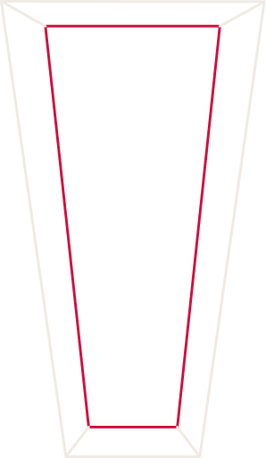
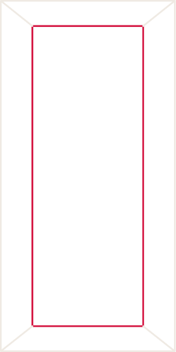
BEYON CUTS
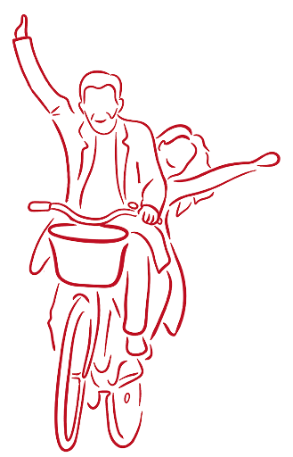
...TO THE MOMENT WHEN YOU'RE MOST YOURSELF
0%
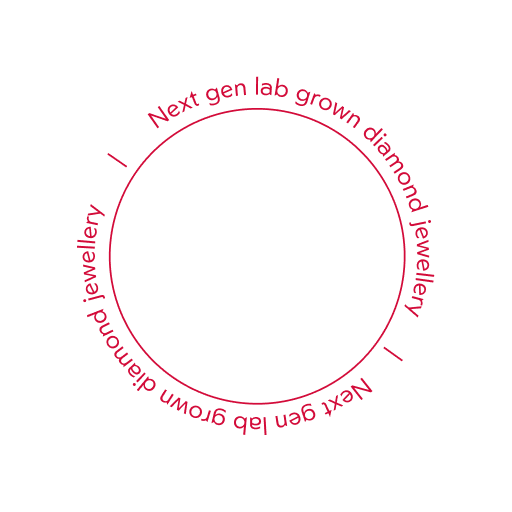
✕
At the heart of the brand lies the iconic Y, a symbol inspired by the universal gesture of arms raised — in joy, victory, surrender, release. A shape found in moments when a woman feels most herself: open, unguarded, free.